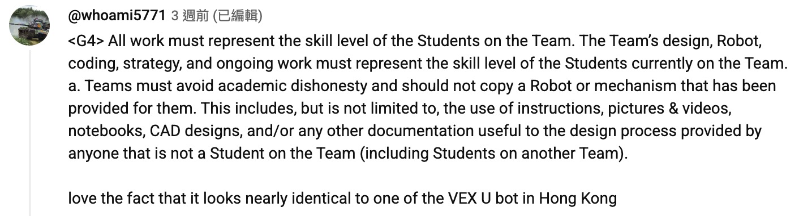

EzLib說明書
專屬高階競技架構：LemLib + EzDrive 混合動力系統
下載 EzLib
點擊下方鏈接下載最新版本的 EzLib：
下載 ezLib.zip
單位與座標系（必記）
ezPID.drive的距離單位是英吋 (inches)，沿該次呼叫開始時的航向計算——不是馬達度數。ezPID.turn的目標是絕對航向，單位為度。LemLib 航向以 0° 朝向 +Y，順時針為正。timeout單位是毫秒；時間屆滿後馬達停止，該次運動結束。- 位姿保留在 LemLib
chassis.getPose()；馬達輸出與到位判斷都經過全域ezPID（ez_compat::EzDrive）。
本站對齊 EzLib-EzDrive-motions 的 EzLib_2.0.0_beta（PROS 4.2.2 hard float、standalone LVGL、Type R Dash）。線上輔助：pid.ykyle.eu（PID）、moveToPose 模擬器。模擬器不代替場上／SD CSV 實測。
使用前必讀：重要警告
在使用 EzLib 之前，請務必仔細閱讀以下內容
⚠️ 重要警告
本章內容包含強烈建議遵守的關鍵注意事項。跳過本章可能導致嚴重後果。
請先理解再使用，否則必被 G4
在使用本套 EzLib 架構之前，你必須徹底理解以下核心概念：
- LemLib 的 Odometry 原理與限制：為什麼它會產生累積誤差？
- EzDrive 的 PID 控制邏輯：為何需要短距離精準控制（以英吋為單位）？
- 座標重置的時機與方法：何時需要
wallReset／getRealPose？ - 混合式架構的設計哲學：為何不能全程依賴單一方案？
如果你沒有仔細閱讀並理解本說明書的內容，就直接使用本套系統，我強烈預期你會在比賽中被 G4。這不是威脅，而是對你跳過理解步驟的必然結果。
理解 → 懂原理 → 再使用。這是你避免被 G4 的唯一途徑。

學習路徑建議
建議按照以下順序學習：
- 先理解系統核心理念（本章）
- 仔細閱讀系統初始化與 Setup 章節
- 掌握底盤 PID 控制原理（英吋／絕對航向）
- 學習 LemLib 移動指令（bind 後共用 ezPID）
- 最後才實際應用於 Auto 編寫
跳過任何步驟都可能導致你在比賽中失敗。
為什麼不能全程依賴 LemLib？
LemLib 的 Odometry (里程計) 非常強大，但絕對不能全程單靠它跑完 15/60 秒的 Auto。在實際比賽中，底盤碰撞、輪胎打滑、重心轉移，都會產生累積誤差 (Accumulated Error)。如果全程只信賴開局的 (0,0) 座標，到了中後段必定會出現嚴重的座標偏移 (Drift)。
因此，本套系統採用了混合式架構：我們利用 LemLib 來處理複雜的曲線／長距追蹤 (moveToPose 等)，同時必須結合我們自訂的 EzDrive (ezPID) 來執行極高精度的短距離直線／轉向 PID，並在關鍵時刻強制執行座標重置（wallReset／getRealPose）。只有這樣，才能確保 Auto 百發百中。
第一章：系統初始化與 Setup
在 main.cpp 的 initialize() 函數中，我們必須一次過設定好 LemLib、EzDrive 以及背景任務。這決定了整部機器人的物理反應基準。
LemLib Chassis 設定注意事項
關於 LemLib chassis 基礎硬件設定（例如 Drivetrain、Sensors、PID 參數宣告），請直接參閱 LemLib 官方說明手冊。本說明書將專注於實戰的進階邏輯與 EzDrive 自訂底盤的整合應用。
重要：EzDrive 建構式會呼叫 chassis.bindEzDrive(this)。因此 moveToPoint、moveToPose、turnToHeading、turnToPoint、swingToHeading、swingToPoint 共用 ezPID 的 drive／turn PID——不必另調一套 LemLib angular gains。建構時留下的 LemLib ControllerSettings 在 bind 之後僅屬建構 API，實際出力走 ezPID。
startI 與到位判斷
startI：只有 |error| 小於此值且 startI != 0 才積分；誤差變號時積分清零。
到位條件：誤差在 small／big 區間維持夠久，且 |derivative| <= velocity_threshold（見上方 exit／vel 設定）。
ezPID.turn 與 chassis.turnToHeading 在 bind 後PID 相同，但 motion 邏輯略有差異（direction／minSpeed／earlyExit 等）。日常 auton 用 ezPID.turn 即可。
專案結構與宣告慣例
main.h 引入 lemlib/api.hpp 與 ezlib/ez_compat.hpp。chassis、ezPID 與 pidTuner 在 src/main.cpp 建立。庫碼與 user 碼分開；宣告遵守 extern（大物件）與 inline（小硬體）慣例。
| 路徑 | 內容 |
|---|---|
src/main.cpp | 底盤馬達／IMU／tracking／chassis／ezPID／pidTuner 定義；auton_select::init |
include/customs/ + src/customs/ | User 側（自己改／寫）：objDeclare、autons、controls、fsm、dash_config |
include/customs/dash_config.hpp | 改這裡設定 Dash 的 DRV／MCH 溫度對應哪粒馬達 |
include/ezlib/ + src/ezlib/ | 庫內（一般不用改）：ez_compat、pid_tuner、relocate、telem_dash、monitor、auton_select、sd_log、boot_log、ui_pages |
include/ez_compat/ | pid.hpp、motion_math.hpp（LemLib motions 共用數學；路徑維持 ez_compat/...） |
src/assets/robot01.c … robot10.c | LVGL C array 動畫幀（flash） |
firmware/liblvgl.a | 預編譯 LVGL（beta：hardfp + LV_MEM_CUSTOM） |
Include 例：#include "ezlib/ez_compat.hpp"、#include "ezlib/telem_dash.hpp"、#include "customs/dash_config.hpp"。
Dash 溫度：dash_config.hpp（必改檔）
Brain Dash 的 DRV／MCH 兩行溫度只由 include/customs/dash_config.hpp 決定——不用改 ezlib/telem_dash.cpp。
- DRV：
format_drive_temps— 左 LF/LM/LB｜右 RF/RM/RB（leftMotors／rightMotors） - MCH：
format_mech_temps— L_intake／R_intake｜low／high roller
MotorGroup 用 get_temperature(index)：index = 在 main.cpp list 裡面次序（0、1、2…），不是 smart-port 號。例：leftMotors({-14, -15, -16}) → index 0=port 14。獨立 pros::Motor 用 motor.get_temperature()。
馬達／氣動注意
負 port = 反轉（例 -14）。禁止對同一 port 再宣告一份 pros::Motor(...)——會與 MotorGroup 搶 reverse／encoder，導致 ezPID.drive 異常。Intake 用獨立馬達；底盤只用 leftMotors／rightMotors。
氣動：pros::adi::Pneumatics(port, start_extended)，第二參數 false = 開機收回。手制 pneumaticsBtn()（controls.cpp）——僅在 tuner 關閉時呼叫（避免同 X／A 衝突）。常用：X＝arm／hook 序列、A＝hook.toggle()、Y＝matchload.toggle()。
第二章：EzDrive 底盤 PID 控制
在 Auto 階段，EzDrive（全域 ezPID）負責執行最高精度的點對點移動與轉向。距離以英吋計，轉向以絕對航向（度）計。
Auton 距離注意
部分舊路線目標仍可能是編碼器度數風格的大數字。新路線請一律用英吋／度。量度前勿把舊大數字當英吋讀。
絕對準則：每一段距離都有最佳的 PID 數值
不能一條數用到尾
很多新手會犯一個嚴重錯誤：設定好一組 kp, ki, kd 後，就期望它能完美推動車子行 5 吋，又能完美行 50 吋。這在物理上是不可能的。 理論上，推動長距離需要更大的煞車力 (kd) 來抵消龐大的慣性；而短距離微調則需要更敏銳的比例推力 (kp)。
因此，我們的 ezPID.drive／turn 支援 Inline PID（單次增益覆寫）。結束後恢復全域值；startI 不變。針對特定距離，可傳入專屬的 {.p, .i, .d}。
PID 模擬器
調增益前先建立直覺，請用：
pid.ykyle.eu — PID 模擬器
可調 P／I／D、睇 overshoot，再上機用 Brain／controller PID tuner + /usd/pid_tune_log.csv。模擬器不代替場上實測。
⏳ 非同步／同步控制與 WaitUntil
在 drive 或 turn 的最後一個參數設為 true 即可開啟非同步模式 (Async)，讓程式可以立刻執行下一行（例如提早啟動 Intake）。同一時間只有一個運動佔用底盤；pidTuner 開啟或 ezPID.is_busy() 時 arcade 會關閉。
重要：必須等待完成 (waitUntilDone)
配合 ezPID.waitUntil(inches) 觸發半途動作後，必須添加 ezPID.waitUntilDone()。這能確保移動完全結束後才執行下一個底盤指令，否則新舊動作會嚴重衝突。
ezPID.waitUntilDone() 在 motions_pending == 0 且 !chassis.isInMotion() 時返回，或安全時限後 cancel_movement()。長底盤運動請用 chassis.waitUntilDone()。
參數詳解：
distance_inches：直行目標距離（英吋，可為負）。angle：轉向目標絕對航向（度）。max_speed：最高速度 (0–127)。timeout：強制退出時間 (毫秒)。安全網，防止死等。gains：可選{.p, .i, .d}單次覆寫。async：設為true時底盤在背景移動，程式立刻往下執行。
第三章：LemLib 移動指令
對於長距離、跨越半個場地、或者需要畫出優雅曲線的動作，我們交給 LemLib 處理。async 預設為 true；要阻塞可傳 false 或之後呼叫 waitUntilDone()。
bind 後共用 ezPID
綁定 EzDrive 之後，下表所列運動的 drive／turn PID 都走 ezPID。你調好的 set_drive_constants／set_turn_constants 會同時影響 LemLib 曲線與 ezPID.drive／turn。
| 呼叫 | PID（bind 後） | 備註 |
|---|---|---|
turnToHeading／turnToPoint | turn | 可設 direction／minSpeed／earlyExit |
swingTo* | turn + swing_power | 鎖定一側 |
moveToPoint | drive + turn | ＜7.5in 時角向輸出降為 0 |
moveToPose | drive + turn + lead | 無獨立 ezPID API 對等 |
1. moveToPoint (點對點直線移動)
最基礎的移動方式。車子會計算自身位置與目標點的直線距離，並驅動底盤前往。注意：它不會管你到達時車頭指著哪裡。
2. moveToPose (曲線姿態移動)
指令要求車子到達 (x, y) 時，車頭必須精確指著 theta 角度。角向使用 turn PID（不是 heading hold PID）。
互動式模擬器
建議先使用 moveToPose 模擬器 練習參數調整，理解不同參數對機器人路徑的影響。
常用參數詳解
| 參數 (Parameter) | 詳細說明與應用場景 |
|---|---|
forwards | 預設 true。設為 false 代表車尾向前行駛。 |
lead | 決定車子多早就開始轉向。太低會直角急轉，太高會畫極大圓弧。 |
maxSpeed | 限制最高速度 (0–127)。 |
minSpeed | 最低速度。設為非零值時，退出條件會切換為「較不精確但更平滑」。 |
earlyExitRange | 連貫動作神技。建議配合 minSpeed > 0。車子進入範圍內即提早結束指令。 |
direction | 轉向方向（turn／swing 常用）。 |
3. turnToHeading & turnToPoint
專注於原地轉向 (Pivot Turn)。bind 後角向 PID 與 ezPID.turn 相同。
第四章：重置座標 (Reset Odometry)
呼應序言：為了解決累積誤差，我們必須在 Auto 的中段，利用場地邊界或感測器重新校正 (x, y, theta)。實作在 src/ezlib/relocate.cpp。
撞牆重置 (wallReset)
利用電流＋低速判定「確定撞實」後，把對應軸寫死為 0，並寫入 theta。
| 參數 | 意義 |
|---|---|
axis | 'x'：認為貼緊 X 軸牆 → setPose(x, 0, theta)；'y' → setPose(0, y, theta) |
velocity | tank(v,v) 恆功率；負＝倒車撞，正＝前撞（常見 ±30～60） |
theta | 撞實當下強制寫入的航向 |
timeout_ms | 安全超時；內部用 |vel|<2 且電流 >2000mA 維持約 100ms 當 stall |
撞完會 tank(0,0)、短 delay，然後還原 BRAKE_COAST。之後通常再接 getRealPose 修另一軸。
感測器相對校正 (getRealPose)
這是本系統的中段微調函數。語意是相對校正：expected − (actual_perp − golden) × side，其中 actual_perp = get_kf_dist × cos(α)，α 為 beam 與牆法線夾角（來自 chassis θ）——不必量測 distance sensor 相對 tracking center 的 CAD offset（golden 已包）。
| 參數 (Parameter) | 設定與原理解釋 |
|---|---|
expected | 你預期此時該軸座標（例：應在 Y=0 附近就傳 0）。 |
golden | 當機器人真的停在 expected（量時盡量正對牆）時，感測器應讀到的距離（吋）。練習場量一次寫死即可——已包含安裝 offset。 |
sensor | dist_front／back／left／right。內部經 get_kf_dist 濾波（壞讀數 → 999 或上一格）。 |
side | +1：感測器朝座標增大方向（北／東）；-1：朝南／西。 |
getRealPose 的內部防護機制
1. KF／濾波讀數：一律查 conf（<30／PROS_ERR）→ 回傳 expected。
2. heading cos 投影：用現在 chassis θ + sensor mount 做 actual_perp = actual × cos(α)；小角度不必次次 wallReset。|α| > 25° 放棄校正。
3. 微小誤差忽略：若 |diff| < 0.25"，不作修正。
4. correction clamp ±6"：單次修正上限，避免一次跳飛。
5. 避開場地公差：只問「相對練車時量好的 golden 差了幾吋」，不會把圍欄砌裝誤差寫進絕對場地尺。
| 問題 | 答案 |
|---|---|
| 要不要 CAD sensor offset？ | 不用。 golden 在正確姿態量一次就包了。 |
getRealPose 計距離時 θ？ | 不用你當 0——函數讀 chassis.getPose().theta 做 cos。前提是 odom／IMU 大致準。 |
setPose(..., θ) 寫入？ | 後面路徑當什麼角，就寫什麼角。整段當 (0,0,0) → 寫 0；只修牆距 → 傳現在 theta。不要實際 45° 又硬寫 0。 |
| 方法 | 大概時間 | 幾時用 |
|---|---|---|
| cos 補償（內建） | 0 ms | 日常 mid-auton；偏幾度～十幾度 |
短 ezPID.turn 再 reset | ~200–400 ms | θ 已歪到 >15–20° |
wallReset | ~0.8–1.5 s | 要硬鎖一軸／完全不信距離 |
量 golden：物理對位／治具把車放到 auton 中該 reset 的姿態 → 讀 Brain Dash DIST 該格吋數 → 寫進程式。換場地若圍欄差很多，可重量 golden，而不必改整套 offset 幾何。
與 RW-Template 絕對重置的對比
RW-Template 的 distance reset 走絕對場地座標（牆在 ±70.25"，必須量 CAD sensor offset；斜牆用射線）。EzLib 刻意用預計−實際的相對模型 + cos(α)：調參成本是每段 reset 記一個 golden，換場地若圍欄差很多可重量 golden，而不必改整套 offset 幾何。無內建 MCL。
要少量 CAD、對抗爛場地、auton 裡已知「我大概在哪」→ 用 getRealPose + wallReset。要斜牆射線／可選 MCL／與絕對場地路徑緊耦合 → RW-Template 較完整，但要認真量 offset，並接受場地公差會入系統。
第五章：狀態機 (FSM) 與防卡死機制
機構控制（如 Intake）嚴禁在 opcontrol 裡面寫死 motor.move()。建議依賴 Enum 與 Switch 的狀態機架構，以支援智能防卡死與非同步操作。氣動手制見 pneumaticsBtn()（controls.cpp）——僅在 tuner 關閉時呼叫，避免與 X／A 調校鍵衝突。
所有的馬達給電邏輯，全部封裝在獨立的更新函數內，並放入背景 Task 執行。當遇到電流超載時，系統可自動接管執行反轉。
第六章：實戰 Auto 寫法範例
這章節展現如何將前面的理論結合：LemLib 曲線 → 重置 → ezPID 短距精準。單位一律英吋／度（舊碼可能仍有編碼器度數風格大數字——新路線不要跟）。
由推機到寫 Auton（建議工作流）
目標：先令 drive／turn 跟得穩，再人手推／開量真實距離同航向，最後寫入 customs/autons.cpp。
1. 調 PID（一次搞掂底盤）
- 插 SD（可選）、拔場控。
- X+A 開 PID tuner（見第七章）。
- 用 B／Y（±12″）、L1／R1（±90°）調到少震、到位準；Print 貼返
initialize()。 - 可抽 CSV 同 AI 畫 error 曲線（見 SD 卡 CSV）。
- 線上輔助：pid.ykyle.eu。
未調好 PID 就寫長 auton，量到的數都會被震盪／未到位吃掉。
2. 真實推機／開，睇 traveled 同 pose
練習場、tuner 關：
| 想睇咩 | 點做 |
|---|---|
| 直線走了幾吋（For PID Distance） | 右搖桿切 controller displayMenu = 1 → D: = ezPID.get_traveled()；T: = 航向 |
| 場地座標 X／Y／θ | 右搖桿切 displayMenu = 2；或睇 Brain Dash pose |
| 清 traveled 重新量 | DOWN（reset_pid + 回 Dash）或 UP cancel／reset |
距離牆幾吋（量 golden） | Dash DIST 四格 |
推機量直線：車放好開局位 → Controller 切 menu 1 → DOWN／UP 清 traveled → 人手慢慢推到下一停點 → 讀 D: 寫入 ezPID.drive(吋, …)（後退用負數）。轉彎睇 θ，用 ezPID.turn(絕對角, …)。
用 pose 寫曲線／長距：Menu 2 或 Dash 記起點、終點 (x, y, θ) → chassis.moveToPose(...)；參數可用 moveToPose 模擬器。中段校正見第四章。
3. 寫入 auton 程式
- 在
include/customs/autons.hpp宣告；src/customs/autons.cpp實作。 - 在
src/main.cpp的auton_select::init({...})加{"顯示名", &你的函數}。 - 練習場 ←／→ 揀 auton（名會上 Dash／手掣）；DOWN+B 跑一次驗證。
- 一段一段加：量 → 寫
drive／turn／moveToPose→ 跑 → 再量下一段。
小提示
ezPID.drive距離 = 沿該次開始時航向 的英吋，不是場地直線到某點的弦長（要去某 (x,y) 用moveToPoint／moveToPose）。- 推機量距時盡量跟 auton 同一開局／同一航向；轉過彎要重新 DOWN 清 traveled 再量下一段直線。
- 手掣 menu 1 的
D:同「For PID Distance」同一用途；Brain Dash 方便同時睇 pose／DIST／溫。
1. 開局定位策略：為何放棄「全自動對位」？
不建議使用 auto_init_universal 當開局主力
auto_init_universal 仍在 src/ezlib/relocate.cpp，但實戰不建議當開局主力。原因有二：
1. Offset 測量困難：要精確量度每顆 Sensor 距離底盤中心的 X／Y 偏差極度困難。
2. 場地公差致命：正式比賽場地圍牆往往有 ±1 吋以上誤差。依賴邊界測距等同於將場地誤差吃進系統。
👑 頂級隊伍的標準開局：物理對位 (Physical Alignment)
最穩陣、最暴力的做法，是利用機器人平整的車尾或對位治具 死死地頂住場地牆壁，然後直接將座標寫死為 0。
2. 技能賽 (Skills) 的完美混合連招
標準作業流程：「曲線走位」➔「撞牆重置」➔「相對距離校正」➔「高精度微調」。
3. 極度乾淨的遙控期 (Opcontrol)
一個專業的 Opcontrol 應該只扮演「翻譯員」：讀取手掣訊號 ➔ 改變全域狀態 ➔ 結束。絕對不要在裡面寫死耗時邏輯。注意：用 pidTuner.suppress_arcade() 決定是否關 arcade；氣動掣僅在 !pidTuner.controller_mode() 時處理。
耗時運算（防卡死、UI、遙測）應放在 initialize() 啟動的背景 Task。opcontrol 每一轉飛快完成，才能保證手掣零延遲反應。
第七章：實用工具與除錯 (Tools & Debug)
練車階段內建 Type R Dash、PID 調校器、SD CSV、Controller monitor、動畫與場控 teardown。Brain 開機直入 Dash；auton 用 headless auton_select——不再有 robodash Console／Selector LVGL 頁。
🏎️ Type R Dash（telem_dash）
開機流程（EzLib_2.0.0_beta）：
telem_dash::start()— 黑屏等 ignition（品牌／BATT 隱藏）。finish_boot()→ splash → 中 KM/H + 左 TORQUE Nm + 右 FUEL % sin sweep（全程無針）。- 掃完 → 左 BATT % 弧（無針）+ pose／DIST／DRV／MCH／RAM／auton；
live_ready_。 ui_pages::show_dash()／show_pid()互斥 focus；PID／robot 動畫會set_gauge_hidden避免電量透出。
溫度來源集中在 include/customs/dash_config.hpp（改 DRV／MCH 不用改 telem_dash.cpp）。顏色：batt <40 黃／40–80 紅／>80 綠；DIST inch≈999 灰、conf>50 綠、<20 黃、其餘紅。
📊 量距離：For PID Distance（英吋）
練習場 displayMenu = 1
用手推動車子時，Controller 可顯示 ezPID.get_traveled()（For PID Distance）。單位是英吋，正是你設定 ezPID.drive() 目標的最佳測量工具。用右搖桿左右切頁切到 menu 1。Brain 上可同時睇 Dash pose／DIST／溫。
🎛️ PID 調校器
pidTuner.start() 在 initialize() 呼叫。增益寫在 ezPID 上，與 auton／底盤 motion 同一套。
Brain PID 頁（compact UI）：換 field、± 調值、+12／−12、h±90、Print、Ctrl、Pose0、L10／R10（十圈）。亦可 X+A 用 controller 調。Print 會把常數片段打到 terminal，並寫一行 SD snapshot（有卡時）。線上先建立直覺：pid.ykyle.eu。
建議流程（練習場）：插 microSD（可選）→ 拔場控 → 開機等 Dash／校正完 → X+A 開 tuner → A 清 pose；←→ 揀 field；↑↓ 改數值 → B／Y 測 ±12″、L1／R1 測 ±90° → 滿意後 Print 貼返 initialize() → X 退出。要估 tracking 偏移再跑 L2／R2 十圈。
控制器調校（須拔場控）：X+A 進入（上升沿）；進入時 cancel 運動、停 arcade。X（未按住 A）退出。
| 按鍵 | 動作 |
|---|---|
| LEFT／RIGHT | 上／下一個 PID field，並 set_pose(0,0,0) |
| UP／DOWN | field 數值 ±step |
| A | pose (0,0,0)（Pose0） |
| B／Y | drive(+12)／drive(-12) async → 寫 pid_tune_log.csv |
| L1／R1 | 絕對 turn −90°／+90° |
| L2／R2 | 左 CCW／右 CW 各轉 10 圈 → findingOffset.csv |
| X（單獨） | 退出 tuner |
十圈實作：每圈 4×(±90°) 絕對 turn（避開 wrap 無法一次轉 360°）。開始時會 set_pose(0,0,0)。調校開啟時 intake 肩鍵讓給 L1／R1／L2／R2；關閉後恢復。
💾 SD 卡 CSV
路徑前綴 /usd/（PROS），需插入 microSD。輔助 API 在 sd_log（src/ezlib/sd_log.cpp）：檔案不存在或為空時自動寫 header，之後 append 累積。
/usd/pid_tune_log.csv：tuner drive／turn 時約每 15ms 寫一行drive_tick／turn_tick（整段誤差曲線），結束再寫drive／turn；Print 寫一行print。欄位含增益、odom、IMU、traveled等。/usd/findingOffset.csv：L2／R2 十圈測試（dir＝CW／CCW、rev、quarter、odom／IMU）。可用每圈 (x,y) fit 圓估 tracking／旋轉中心偏移。建議 CW 與 CCW 都跑。
取出：測完關 Brain 電源 → 抽卡 → 複製 CSV（可改名備份）→ 再插卡繼續測。若改過程式 CSV header，請刪 Brain 卡上舊檔再跑。V5 常無 RTC：wall_time 可能是 boot_<millis>；畫圖用 timestamp_ms。
自己畫圖：篩 event == drive_tick（或 turn_tick），X＝timestamp_ms，Y＝誤差欄；可另畫 traveled／odom／IMU。同 AI 合作：把 CSV 交俾 AI，請出 Python（pandas + matplotlib）畫 error vs 時間、比較兩次 +12″ run、或 fit CW／CCW 圓心——圖是輔助，最終以車行為準。
📱 Controller monitor 與場控 teardown
initialize() 開兩條 task：uiTask_fn（controller 三行 + robot 動畫）、telemetry_fn 刷新 Dash。Controller 只在字變了才 print 一行（dirty + round-robin），不定時 clear()——減少 V5 controller 丟字／卡死。Dash／PID 用 ui_pages 切（standalone LVGL）。
| 模式 | L0／L1／L2 摘要 |
|---|---|
場控 is_connected() | B:% C:%、auton 名、X Y T（整數吋／度） |
| Tuner 開 | pidTuner.format_controller（field／值／狀態） |
| 練習 menu 0 | T:秒、電量、auton 名 |
| 練習 menu 1 | D: traveled（英吋）、T: theta |
| 練習 menu 2 | X／Y／T |
場控接上（competition::is_connected()）時：pidTuner.force_off()、禁止 X+A、停動畫、釋放 Anim／Dash／PID UI、Controller 精簡三行。拔出後重建 PID／Dash。
練習場快捷鍵（tuner 關）
| 操作 | 作用 |
|---|---|
| 右搖桿左右 | displayMenu 0／1／2 |
| LEFT／RIGHT | 換 auton（不 set_pose）；名上 Dash／手掣 |
| UP（短按） | cancel + reset_pid + rumble |
| UP（按住） | 開動畫（autoChange）；開始時 set_gauge_hidden(true) |
| DOWN | reset_pid（清 traveled）+ 回 Dash |
| DOWN+B | focus Dash + 跑 autonomous() |
| DOWN+Y | moveToPose(0,0,0,…) |
| X+A | 開 PID tuner（見上表） |
Tuner 內 LEFT／RIGHT 仍會 set_pose(0,0,0)（換 field）。Controller 換 auton、DOWN 回 Dash 會清 autoChange。
動畫與 LVGL 記憶體
Standalone LVGL overlay：anim_page + 一個 lv_img，換 robot01…robot10 src（按住 UP → autoChange）。開動畫 set_gauge_hidden(true)；關動畫／DOWN：show_dash() 還原電量錶。不要為每幀建多個 widget 再 focus——會爆 heap／碎裂。
現行設定：include/liblvgl/lv_conf.h → LV_MEM_CUSTOM 1（malloc／free／realloc），不是固定 256KB BSS pool。Dash 顯示真實 free RAM（mallinfo + sbrk）。EzLib_2.0.0_beta 的 liblvgl.a 須 hard float ABI。唔好用 rd::Console::printf（已移除 Console 頁）。